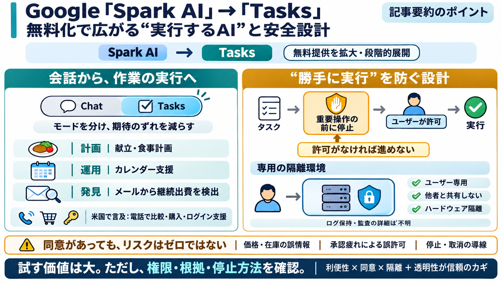

Google Makes Tasks in Gemini Free and Adds Calls and Payments – Unite.AI
Gemini can now call businesses and check out with Google Pay under a spending cap users set. Tasks run in a hardware-is…

Gemini can now call businesses and check out with Google Pay under a spending cap users set. Tasks run in a hardware-is…
米Googleは11月17日（現地時間）、Geminiアプリのエージェント機能「Tasks in Gemini」（以下、Task）を、米国、日本、韓国、カナダ、オーストラリア、インドの6カ国で無料で提供すると発表した。 プロンプト例 …
Starting now, this update is rolling out free of charge for hundreds of millions of people across the U.S., Japan, Korea…
Image 3 Boost productivity Access to Gemini 4 Hydrogen and Deep Research in Gemini. Gemini in Google a…
負責廣告與商務業務的 Google 副總裁 Vidhya Srinivasan 說：「我們不只是把廣告帶進搜尋的 AI 體驗，而是重新定義何謂廣告。」 為了實現這個目標，Google 今年稍早開始與 Shopify(SHOP-US)、沃爾…